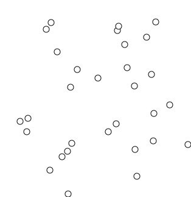

These are some notes I prepared for the Antithesis research reading group. They are very rough, and will likely remain that way.
Union find is one of those things that keeps coming up, and every time I have to remind myself how it works. My aim today is just to introduce you to the idea, if you haven't seen it before, and maybe give you a sense of some cases in which you might use it. In fact, how many of you are already familiar with union find? I'm going to err on the side of being overly introductory today. Maybe we can cover some more advanced stuff (e-graphs?) in the future.
See also Max Bernstein's introduction.
A union-find structure is an efficient way of storing disjoint sets. Two sets are said to be disjoint if they have no elements in common.
# Original implementation courtesy of Phil Zucker
from collections import defaultdict
class UnionFind:
def __init__(self):
self.uf = {}
def __eq__(self, other):
return self.uf == other.uf
# Find the set representative
def find(self, x):
while x in self.uf:
x = self.uf[x]
return x
# Join two sets
def union(self, x, y):
x = self.find(x)
y = self.find(y)
if x is not y:
self.uf[x] = y
def related(self, x, y):
return self.find(x) == self.find(y)
# Get explicit representation
def components(self):
components = defaultdict(set)
for k in self.uf:
components[self.find(k)].add(k)
return componentsThe wikipedia article claims
For a sequence of m addition, union, or find operations on a disjoint-set forest with n nodes, the total time required is O(mα(n)), where α(n) is the extremely slow-growing inverse Ackermann function.
I don't understand this. How does the Ackermann function possibly show up here? Please help me understand. I have no idea.
I sat down and wrote a few property-based tests for this thing. Before we look at them; we're a testing company, so I thought it might be a useful exercise for us to try to come up with some properties to test for as a group. In fact we could probably spend the rest of the hour arguing about how best to do this.
import hypothesis.strategies as st
from hypothesis import assume
from hypothesis.stateful import Bundle, RuleBasedStateMachine, rule
from copy import deepcopy
def implies(a, b):
return (not a) or b
class UnionFindMachine(RuleBasedStateMachine):
def __init__(self):
super().__init__()
self.uf = UnionFind()
elements = Bundle("elements")
@rule(target=elements, element=st.integers())
def add_element(self, element):
return element
@rule(x=elements, y=elements)
def union(self, x, y):
self.uf.union(x, y)
# Arguably unnecessary.
@rule(x=elements)
def reflexivity(self, x):
assert self.uf.related(x, x)
# Also arguably unnecessary.
@rule(x=elements, y=elements)
def symmetry(self, x, y):
assert implies(self.uf.related(x, y), self.uf.related(y, x))
assert implies(self.uf.related(y, x), self.uf.related(x, y))
# This one I think is more meaningful.
@rule(x=elements, y=elements, z=elements)
def transitivity(self, x, y, z):
assume(self.uf.related(x, y))
assume(self.uf.related(y, z))
assert self.uf.related(x, z)
@rule(x=elements)
def representative(self, x):
representative = self.uf.find(x)
assert representative == self.uf.find(representative)
@rule(x=elements, y=elements)
def union_idempotence(self, x, y):
self.uf.union(x, y)
uf = deepcopy(self.uf)
uf.union(x, y)
assert uf == self.uf
UnionFindTestCase = UnionFindMachine.TestCaseCompilers are all about equational reasoning. If your compiler produced a program that's not in some sense equivalent to the source program, something has gone badly wrong.
You should think of union find whenever you need to do some kind of equational reasoning. Equivalence relations define a partition on a set (this is the "fundamental theorem of equivalence relations"), and union find is an efficient structure for storing a partition.
CF Bolz has a nice article explaining the application of union-find to compiler optimization.
Kruskal's algorithm finds the minimum spanning tree of a graph. It uses union-find to perform fast cycle detection.
Animation from Wikipedia:

Pseudocode from Wikipedia:
function Kruskal(Graph G) is
F:= ∅
for each v in G.Vertices do
MAKE-SET(v)
for each {u, v} in G.Edges ordered by increasing weight({u, v}) do
if FIND-SET(u) ≠ FIND-SET(v) then
F := F ∪ { {u, v} }
UNION(FIND-SET(u), FIND-SET(v))
return FA unification algorithm is one that solves equations between symbolic expressions. Unification is, for example, a key component of Hindley-Milner type inference. (See here if you want more detail on type inference in particular.)
from dataclasses import dataclass
from typing import Union
@dataclass(frozen=True)
class TypeLiteral:
literal: str
def __repr__(self):
return self.literal
@dataclass(frozen=True)
class TypeVariable:
variable: str
def __repr__(self):
return f"'{self.variable}'"
@dataclass(frozen=True)
class TypeArrow:
domain: Ty
codomain: Ty
def __repr__(self):
return f"({self.domain} -> {self.codomain})"
Ty = Union[TypeLiteral, TypeVariable, TypeArrow]
def occurs_in(v: str, t: Ty):
match t:
case TypeLiteral(literal=l):
return False
case TypeVariable(variable=w):
return v == w
case TypeArrow(domain=d, codomain=cd):
return occurs_in(v, d) or occurs_in(v, cd)
class InferenceError(Exception):
def __init__(self, message):
self.message = message
def unify(context: UnionFind, lhs: Ty, rhs: Ty):
lhs = context.find(lhs)
rhs = context.find(rhs)
match lhs, rhs:
case TypeVariable(variable=v), _:
if occurs_in(lhs.variable, rhs):
raise InferenceError(f"Occurs check failed for `{lhs}` in `{rhs}`.")
context.union(lhs, rhs)
case _, TypeVariable(variable=v):
return unify(context, rhs, lhs)
case TypeLiteral(literal=lhsl), TypeLiteral(literal=rhsl):
if lhsl != rhsl:
raise InferenceError(f"Literals `{lhs}` and `{rhs}` are not equal.")
case TypeArrow(domain=lhs_domain, codomain=lhs_codomain), TypeArrow(domain=rhs_domain, codomain=rhs_codomain):
unify(context, lhs_domain, rhs_domain)
unify(context, lhs_codomain, rhs_codomain)
case _, _:
raise InferenceError("Shapes `{lhs}` and `{rhs}` don't match.")
import pytest
def test_unify():
def u(lhs, rhs):
return unify(UnionFind(), lhs, rhs)
with pytest.raises(InferenceError):
u(TypeLiteral("int"), TypeLiteral("bool"))
a = TypeVariable("a")
b = TypeVariable("b")
t_integer = TypeLiteral("integer")
t_boolean = TypeLiteral("boolean")
context = UnionFind()
unify(context, a, b)
assert context.find(a) == context.find(b)
context = UnionFind()
unify(context, TypeArrow(a, b), TypeArrow(t_integer, t_boolean))
assert context.find(a) == t_integer
assert context.find(b) == t_boolean